Bringing maritime precision to modern business automation. Using n8n, I transform fragmented tools into a unified, zero-failure engine that operates while you sleep.
A centralized incident response system that monitors active backend integrations for runtime failures. Upon detecting an exception, it captures diagnostic metadata — error codes, timestamps, broken node instances — and routes high-priority alerts to Telegram or Discord in real time, minimizing operational downtime across all connected pipelines.
Automations fail quietly. Without a catch layer, a broken workflow can sit undetected for days — costing time and client trust.
Built a reusable n8n error-handling framework using custom JavaScript to structure telemetry and conditional routing to push alerts to the right channel instantly.
Runtime failures surface in real time via Telegram or Discord — turning silent breakdowns into immediate, actionable incident alerts.
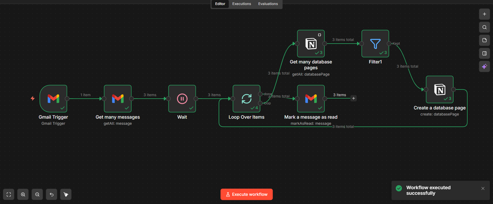
Seamlessly connects Gmail to Notion — automatically extracting targeted incoming emails into organized database records. Uses looping logic and cross-referencing to prevent duplicates and eliminate manual data entry entirely.
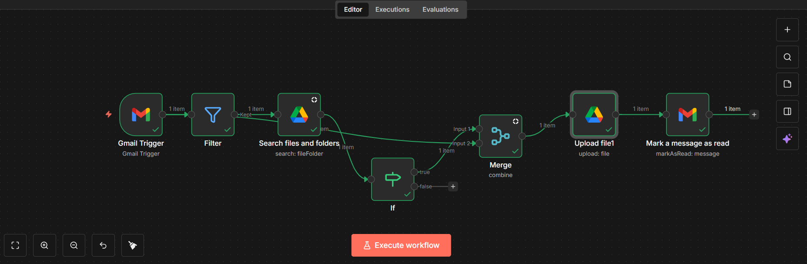
Automatically evaluates incoming emails and intelligently routes attachments into designated Google Drive folders based on custom conditional logic. Eliminates manual file sorting and prevents duplicate uploads.
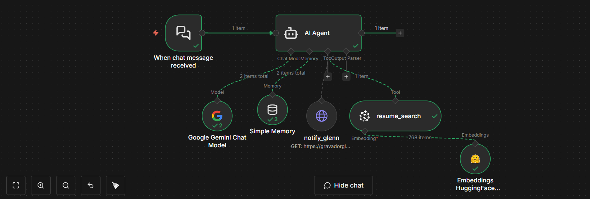
Powered by Google Gemini and Hugging Face embeddings, this autonomous RAG agent acts as an intelligent portfolio concierge — contextually querying resume data via vector retrieval with integrated memory for session continuity.
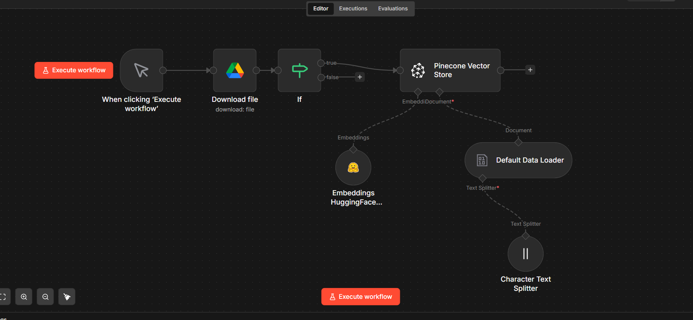
Orchestrates the backend processing for scalable RAG systems by sync-loading documents from Google Drive, splitting via Character Text Splitter, generating embeddings via Hugging Face, and upserting into a Pinecone Vector Store.
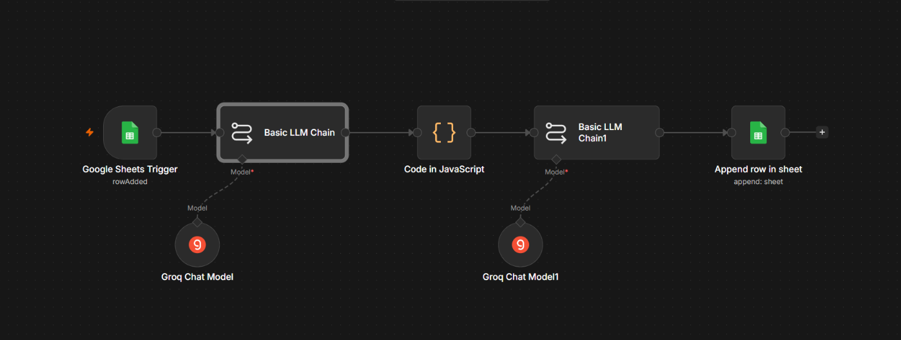
Automates marketing workflows by orchestrating Groq-powered AI agents to transform raw inventory data into high-converting, SEO-optimized product copy — from Google Sheet entry to final content publication.
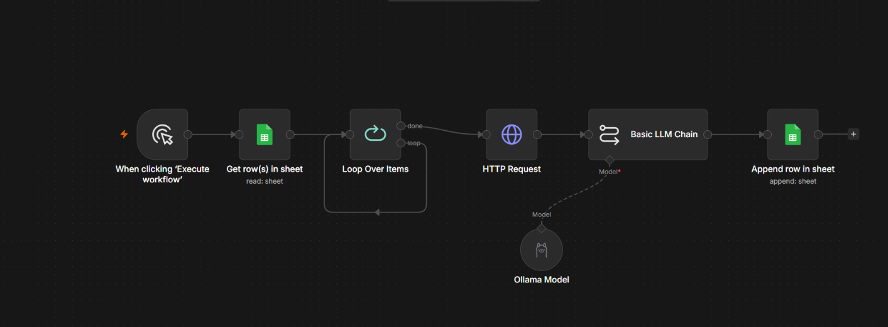
Optimizes B2B outbound by dynamically generating highly contextual, personalized icebreakers for lead engagement — ingesting prospect data, extracting professional hooks via AI, and synthesizing tailored communication templates.
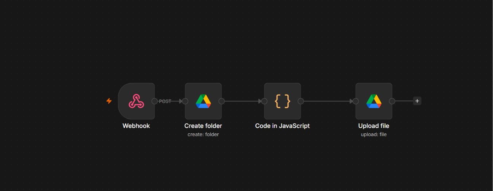
Captures web-submitted data and structures it into a standardized Markdown client brief. Automatically provisions dedicated Google Drive folders and uploads parsed project files in real time via Google OAuth2.
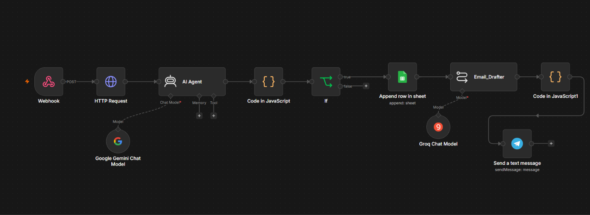
Captures inbound prospects via webhook, enriches them via HTTP data calls, and scores viability using a Gemini-powered AI Agent. Qualified leads are logged in Sheets, personalized outreach is drafted by Groq, and Telegram alerts fire instantly.
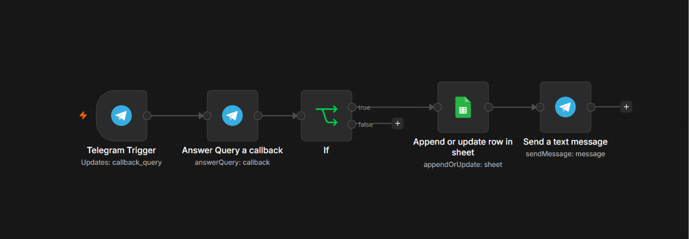
Implements a hybrid automation framework that inserts human oversight into critical data paths. Low-risk entries are auto-processed while high-stakes exceptions are routed to a validation queue — pausing until human approval is given.
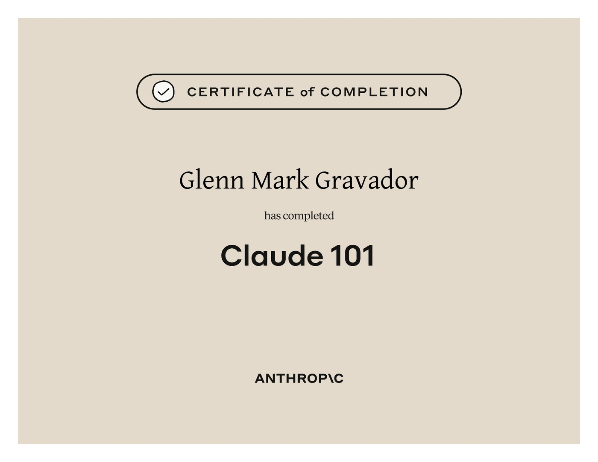
Covers the foundational principles of working with Claude, including effective prompt design, understanding model capabilities, and responsible AI use. This certification builds the practical baseline for deploying Claude in real-world automation contexts. It serves as the entry point to Anthropic's professional AI curriculum.
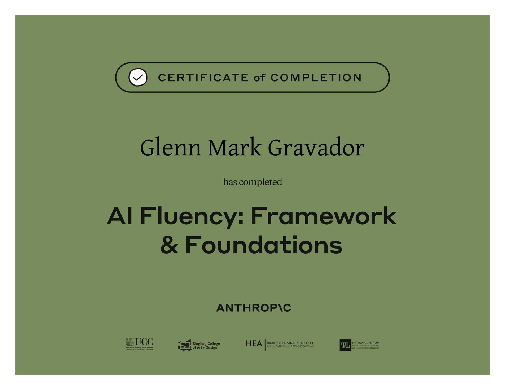
Establishes a structured mental model for working with AI systems — covering how large language models reason, where they excel, and where human oversight remains critical. The course bridges the gap between technical AI knowledge and practical business application. Developed in partnership with leading academic institutions including UCC, Ringling College, and the Higher Education Authority.
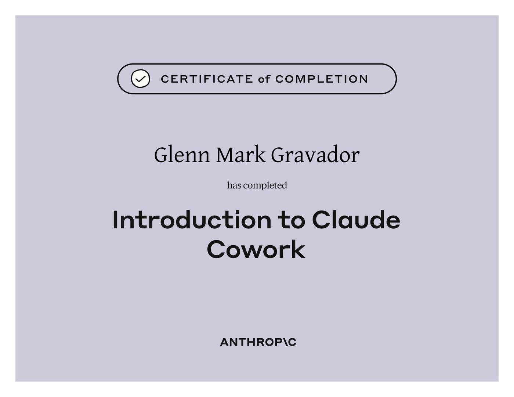
Explores how to use Claude as a collaborative AI partner for complex, multi-step tasks — including research, analysis, and long-form workflows. The course develops skills for orchestrating AI-assisted pipelines that combine tool use with human direction. It directly informs how I structure agentic workflows in my automation projects.
From engine rooms to automation pipelines — same job, different machinery.
Glenn spent years in maritime engineering, where a missed signal or an unmonitored system isn't a minor bug — it's a real-world failure with real consequences. That habit of building for reliability, not just function, now shapes every automation workflow he designs.
Today he builds intelligent automation systems using n8n, Claude, and a suite of AI models — turning fragmented business tools into unified, zero-failure engines. His maritime discipline means he doesn't just build workflows that run; he builds workflows that don't fail silently.
Based in Sibulan, Negros Oriental in the Philippines, Glenn is actively seeking remote AI automation roles with international teams who want operational-grade reliability in their AI workflows.